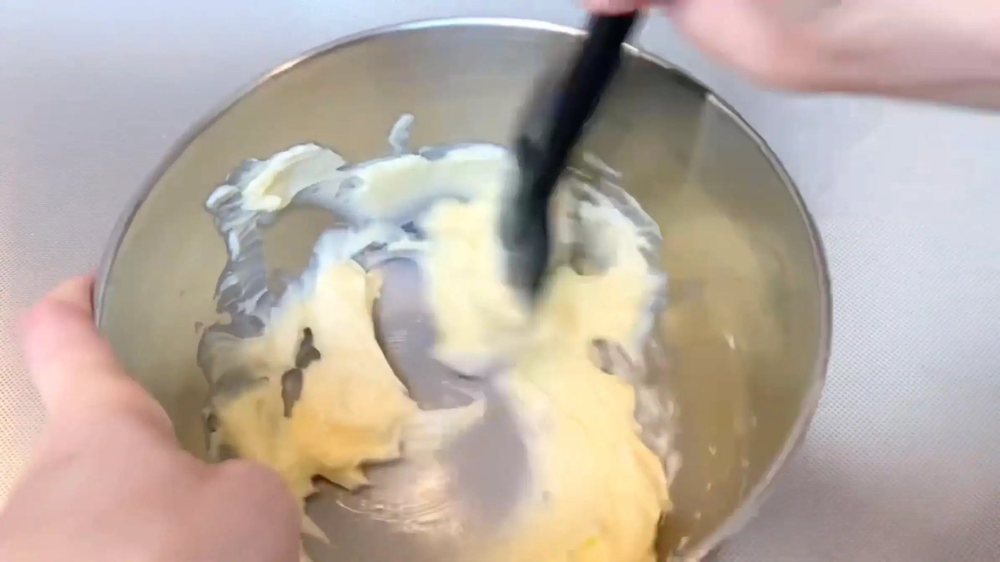
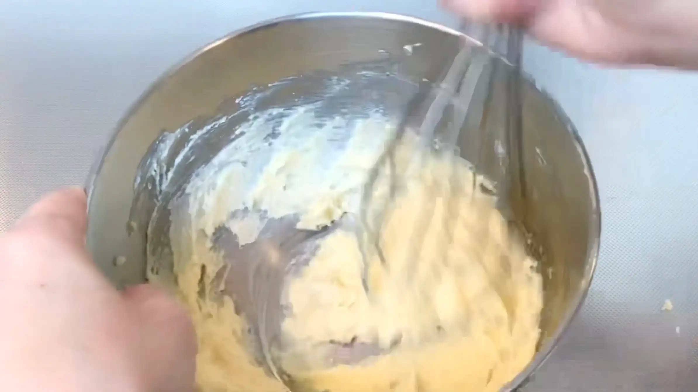
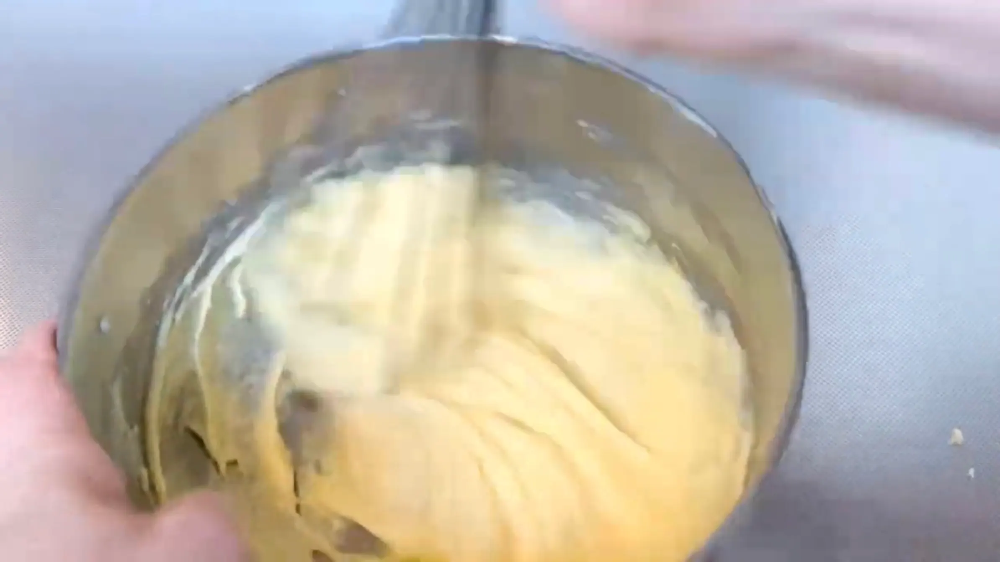
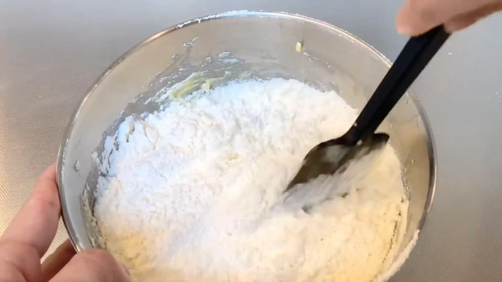
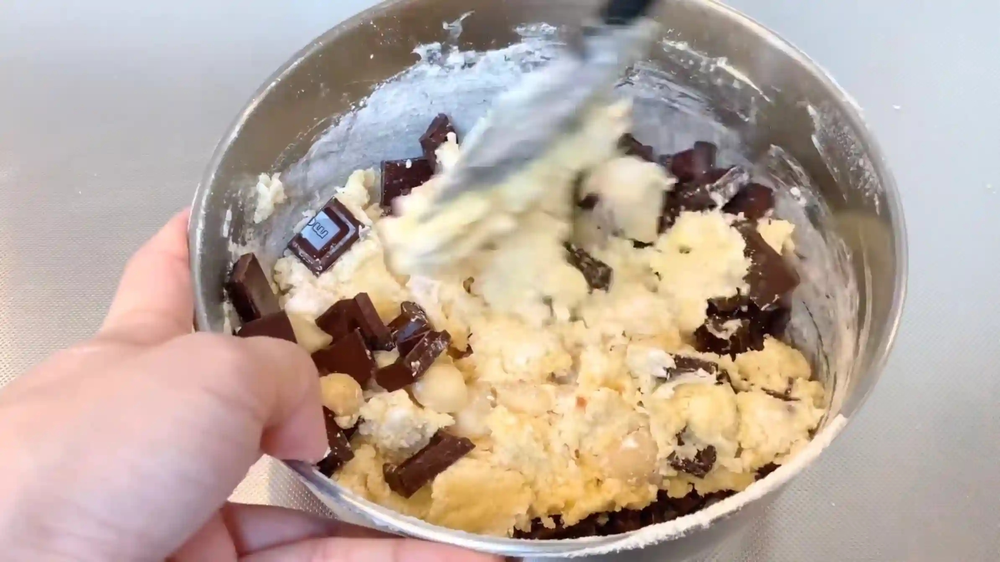
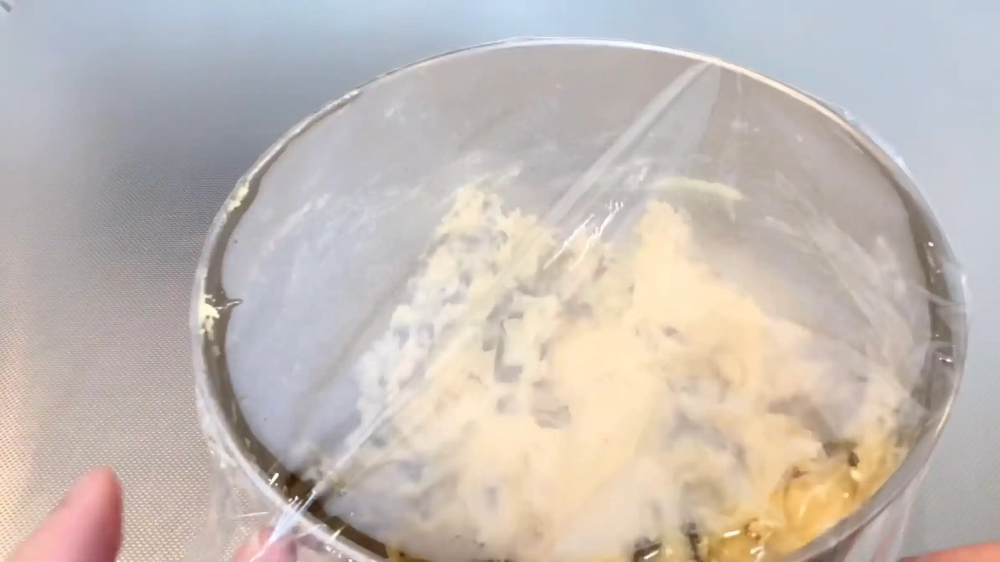
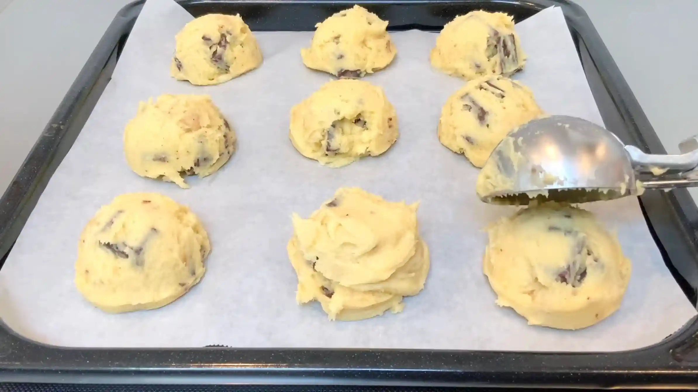

材料 9個分
※粉量を変えると自動計算されます
生地
フィリング
作り方
生地
STEP 1
バターを混ぜ、クリーム状にする（[動画 05:27]）
バターをクリーム状にしておくことで、砂糖を加えたときに混ぜ合わせやすくなります。バターが固い場合は電子レンジで少しずつ温め、溶かさないように注意します。
バターをクリーム状にしておくことで、砂糖を加えたときに混ぜ合わせやすくなります。バターが固い場合は電子レンジで少しずつ温め、溶かさないように注意します。

STEP 2
砂糖を入れ、混ぜる
砂糖の種類によって、クッキーの甘さや風味が変わります。グラニュー糖ならすっきりとした甘さ、三温糖ならコクのある味わいに仕上がります。お好みの砂糖を使ってください。なお、有塩バターを使うため、このレシピでは塩を追加しません。
砂糖の種類によって、クッキーの甘さや風味が変わります。グラニュー糖ならすっきりとした甘さ、三温糖ならコクのある味わいに仕上がります。お好みの砂糖を使ってください。なお、有塩バターを使うため、このレシピでは塩を追加しません。

STEP 3
卵を入れ、混ぜる
卵を加えて混ぜ、バターと砂糖になじませます。全体がなめらかになるまで混ぜ合わせます。
卵を加えて混ぜ、バターと砂糖になじませます。全体がなめらかになるまで混ぜ合わせます。

STEP 4
ふるった薄力粉を入れ、ヘラで切るようにさっくりと混ぜる
薄力粉を加えたら、練らないようにヘラで切るように混ぜます。粉が見えなくなればOKです。
薄力粉を加えたら、練らないようにヘラで切るように混ぜます。粉が見えなくなればOKです。

STEP 5
チョコとナッツを入れ、混ぜる
チョコレートとマカダミアナッツを加え、全体に行き渡るように混ぜます。具材がたっぷり入るため、混ぜすぎないようにさっくり混ぜ合わせます。
チョコレートとマカダミアナッツを加え、全体に行き渡るように混ぜます。具材がたっぷり入るため、混ぜすぎないようにさっくり混ぜ合わせます。

STEP 6
ボウルにラップをして冷蔵庫で1時間冷やす
生地を冷やすことでバターが固まり、丸めやすくなります。生地がやわらかいままだと成形しにくいため、しっかり冷やしてから次の工程へ進みます。
生地を冷やすことでバターが固まり、丸めやすくなります。生地がやわらかいままだと成形しにくいため、しっかり冷やしてから次の工程へ進みます。

STEP 7
1個60gに丸め天板にのせる
1個60gに分けて丸め、厚みのある塊のまま天板にのせます。動画ではディッシャーを使っていますが、スプーンなど生地を塊にできればなんでもOKです。生地を平たくせずに焼くことで、中央がやわらかく残るソフトクッキーらしい仕上がりになります。
1個60gに分けて丸め、厚みのある塊のまま天板にのせます。動画ではディッシャーを使っていますが、スプーンなど生地を塊にできればなんでもOKです。生地を平たくせずに焼くことで、中央がやわらかく残るソフトクッキーらしい仕上がりになります。

STEP 8
予熱したオーブン180℃で15分焼く
表面に焼き色がつき、中央がまだ少しやわらかいくらいで焼き上がりです。オーブンによって焼き上がりが異なるため、表面の焼き色や生地の状態を見ながら、必要に応じて焼き時間を調整してください。
表面に焼き色がつき、中央がまだ少しやわらかいくらいで焼き上がりです。オーブンによって焼き上がりが異なるため、表面の焼き色や生地の状態を見ながら、必要に応じて焼き時間を調整してください。

動画でチェック
おいしく作るためのワンポイントコラム
『無塩バターに、塩ひとつまみ』。お菓子のレシピでよく見かけるこの矛盾。今回は無塩バターを使わず、おうちに常備していることも多い有塩バターでクッキーを作ると、味がどう変わるのかを検証しました。
マカダミアナッツとチョコレートをたっぷり入れた、ゴツゴツとした見た目が可愛い『アメリカンソフトクッキー』です。検証したのは、味わいの変化と、塩の量をどう調整するかの2点です。
① 【検証】味わいはどう変わる？
無塩バターで作ると素材の甘みが活きた優しい味わいになりますが、有塩バターで作ることで、焼き上がりに少しエッジの効いたメリハリのある味わいに仕上がることが分かりました。バター自体の塩気がチョコレートの濃厚な甘みやナッツの香ばしさをグッと引き立て、飽きのこない絶妙な甘じょっぱさが生まれます。
② 【検証】塩の調整はどうする？
通常のレシピで加える「塩ひとつまみ（約0.2〜0.5g）」をどうすべきか検証した結果、有塩バターにはあらかじめ塩分が含まれているため、追加の塩は一切入れずにそのまま混ぜ合わせるのがベスト。これにより、生地全体の風味がきれいにまとまります。
まずは、有塩バターに含まれている塩分量を知ることがとても大切だとわかりました。自分の好みや常備のしやすさに応じて、使い分けていきたいですね。
マカダミアナッツとチョコレートをたっぷり入れた、ゴツゴツとした見た目が可愛い『アメリカンソフトクッキー』です。検証したのは、味わいの変化と、塩の量をどう調整するかの2点です。
① 【検証】味わいはどう変わる？
無塩バターで作ると素材の甘みが活きた優しい味わいになりますが、有塩バターで作ることで、焼き上がりに少しエッジの効いたメリハリのある味わいに仕上がることが分かりました。バター自体の塩気がチョコレートの濃厚な甘みやナッツの香ばしさをグッと引き立て、飽きのこない絶妙な甘じょっぱさが生まれます。
② 【検証】塩の調整はどうする？
通常のレシピで加える「塩ひとつまみ（約0.2〜0.5g）」をどうすべきか検証した結果、有塩バターにはあらかじめ塩分が含まれているため、追加の塩は一切入れずにそのまま混ぜ合わせるのがベスト。これにより、生地全体の風味がきれいにまとまります。
まずは、有塩バターに含まれている塩分量を知ることがとても大切だとわかりました。自分の好みや常備のしやすさに応じて、使い分けていきたいですね。


通常は無塩バターで作ることが多いクッキーですが、お手軽で常備しやすい有塩バターで作る『有塩バタークッキー』のレシピです。マカダミアナッツとチョコレートを贅沢に混ぜ込み、手軽にゴツゴツとした存在感のあるアメリカンソフトクッキーに仕上げます。コラムでは、無塩バターで作った場合との違いの検証結果をご紹介します。